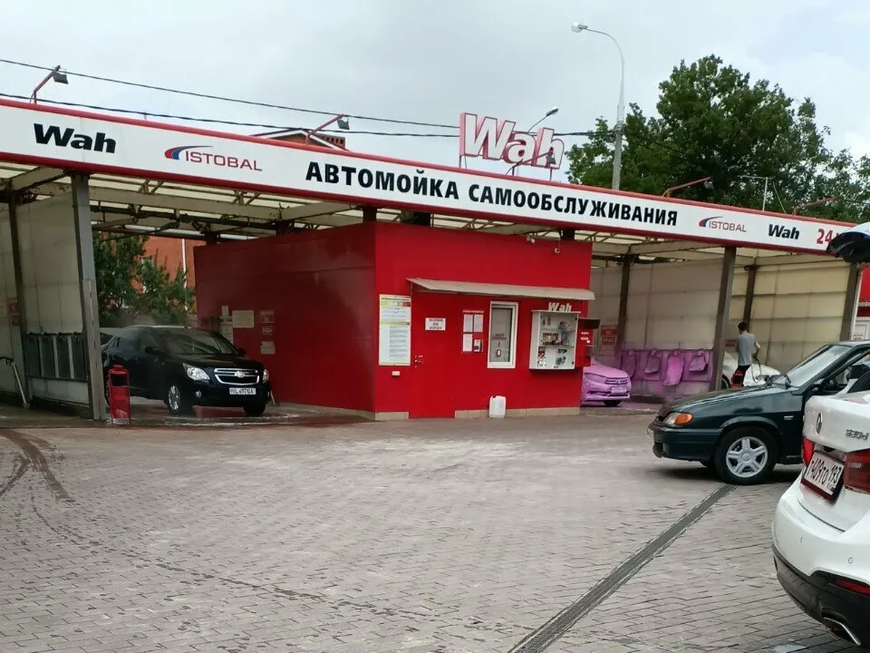
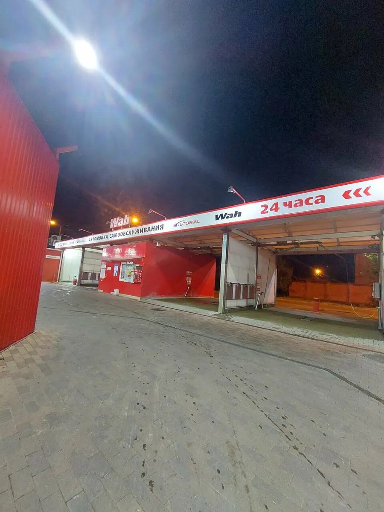
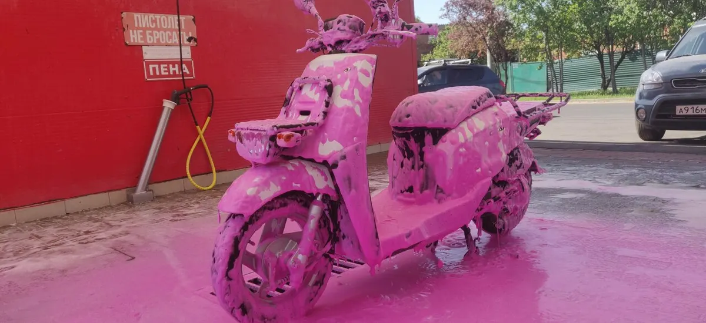
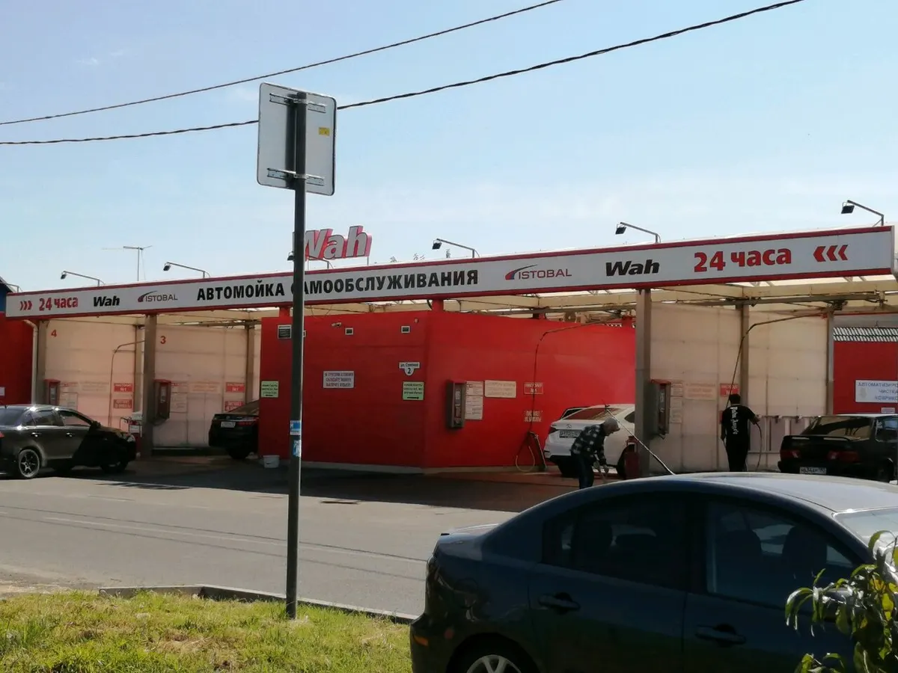

Автомойка самообслуживания · Краснодар
Автомойка в Краснодаре – открыто круглосуточно
Пена, шампунь и вода под напором. Открыто днём и ночью: приезжайте, когда удобно, – очереди на запись нет.

- Открыто круглосуточно
- Рейтинг 4,9 по 1115 оценкам на Яндекс.Картах
- Самообслуживание, без записи
Программы мойки
Цены на программы называет терминал на посту. Здесь – что можно выбрать.
Самообслуживание
- Пена и шампуньразъедает битум и следы мошкары, как пишут клиентыуточнить
- Мойка водой под напоромуточнить
Подробные цены владелец добавит сюда.
Как это проходит
- 01
Заезжаете в свободный пост
Запись не нужна, работаем круглосуточно.
- 02
Выбираете программу
Пена, шампунь, вода.
- 03
Моете сами
Напор воды и пена – на посту.
- 04
Выезжаете
Чистая машина без очереди на запись.



Что обещаем
Круглосуточно
Днём, вечером и ночью.
Без записи
Приезжаете, когда удобно, и заезжаете на свободный пост.
Пена и напор
Пена, шампунь и вода под напором.
Один адрес
Краснодар, Адыгейская набережная, 223/1.
Контакты
- Адрес
- Адыгейская набережная, 223/1, Краснодар
- Часы
- Круглосуточно